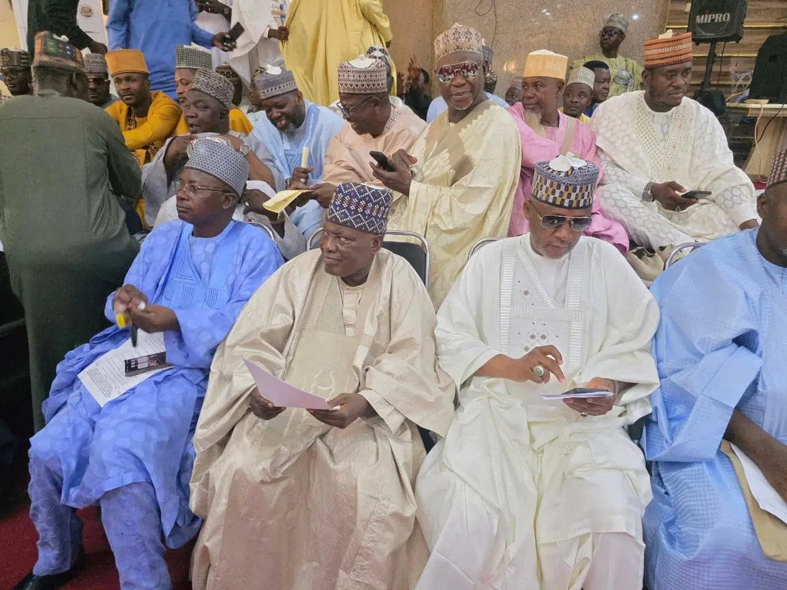

Idris inaugurates APC 2027 Campaign Council in Kebbi

Kebbi State Governor Nasir Idris has inaugurated the All Progressives Congress (APC) 2027 Campaign Council at the Presidential Lodge in Birnin Kebbi. He called on members to carry out their duties with commitment, dedication and determination ahead of the general elections.
Idris described Kebbi as an APC stronghold and urged party stakeholders to return to their communities to mobilise support for the party’s candidates across all elective positions. He named former Kebbi governor and Nigeria’s Ambassador to Turkey, Saidu Usman Nasamu Dakingari, as chairman of the council.
The governor wished the council members well as they took up the assignment. APC State Chairman Abubakar Kana-Zuru commended Idris for supporting the party and helping bring about the council’s inauguration. He also urged members to remain dedicated to campaign activities and work together towards the party’s success in the elections.
Dakingari thanked Idris for the confidence placed in him and the other council members. He said the committee would work collectively and diligently to pursue the party’s objectives and secure success for the APC in the 2027 general elections.
Source: Vanguard